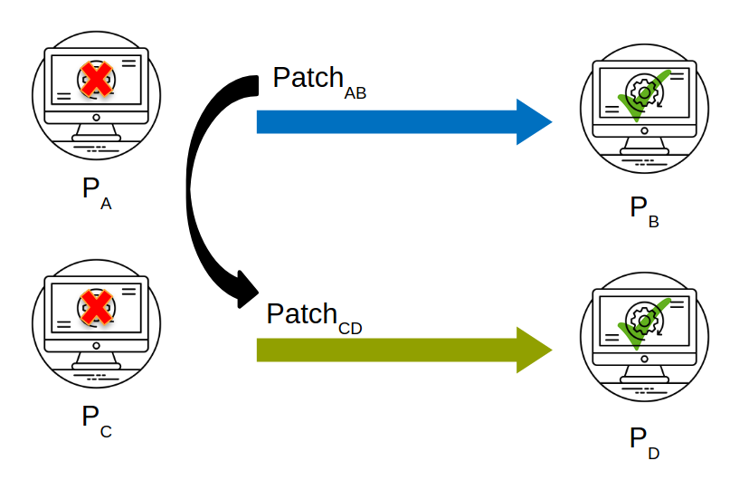

PatchWeave
 Automated program repair is an emerging area which attempts to patch software errors and vulnerabilities. In this work, we formulate and study a problem related to automated repair, namely automated patch transplantation. A patch for an error in a donor program is automatically adapted and inserted into a “similar” target program. We observe that despite standard procedures for vulnerability disclosures and publishing of patches, many un-patched occurrences remain unprotected in the wild. One of the main reasons is the fact that various implementations of the same functionality may exist and as a result published patches need to be modified and adapted. In this work, we therefore propose and implement a work-flow for transplanting patches. Our approach centers on identifying patch insertion points via symbolic execution and context information to adapt the patches. Since the publication of patches make an un-patched implementation more vulnerable, our proposed techniques should serve a long-standing need in practice. Software evolution is similar to biological evolution of organisms and previous work has attempted in introducing advancements in medical technology into automated program repair. An example would be the transpire of horizontal code transfer in software from allograft(transplantation from one body to another, instead of same body), where software errors have been eliminated via fix ingredients transplanted from similar but different applications. However, one of the challenges in allograft is the requirement to find a suitable donor where an organ can be found. Furthermore, the process of adaptation of a foreign organ in the recipient environment is likely to be complicated.
Approach

Given Pa and Pb, our approach first extracts the syntactic edits between Pa and Pb to obtain a list of code segments for transplantation. Then, our approach executes the failing test tF in Pa and Pc to analyze the traces of the failing input. During the test executions, sanitizers are used to detect errors (i.e., the address sanitizer detects memory errors for identifying program locations that lead to the error), whereas the dynamic profiler collects information on statements executed. By combining symbolic analysis and diff analysis, we identify a list of candidate insertion points for each code segment in the patch. This is achieved through partial path condition calculation and computation of partial path condition dominance between Pa and Pc. After obtaining a list of candidate points for insertion, we generate a variable mapping between Pb and Pc with respect to the variables available at the insertion point and the variables used in the patch segment, through which we translate the patch to match the namespace of the recipient program Pc.
Tool
Dependencies
- LLVM - 3.4
- LLVM - 7.0
- Clang - 7.0
- Clang Tools - Github Repo
- Klee - Concolic Support Enabled (Github Repo )
- Python - 2.7
Source Files
Docker Image
Dockerhub RepositoryDocker image only with the tool can be obtained using the tag latest
Docker image with scripts to reproduce the experiments can be obtained using the tag experiments
Evaluation Subjects
| Name | Description | LOC | Version Range | Repository |
|---|---|---|---|---|
| Jasper | JasPer is a collection of software for the coding and manipulation of images. | 26k | 1.900.1 - 2.0.14 | Repo |
| Libsndfile | libsndfile is a C library for reading and writing files containing sampled audio data. | 52k | 1.0.25 - 1.0.28 | Repo |
| OpenJpeg | OpenJPEG is an open-source JPEG 2000 codec written in C language. | 200k | 1.0 - 2.3 | Repo |
| LibMing | Ming is a Flash (SWF) output library. It can be used from PHP, Perl, Ruby, Python, C, C++, Java etc. | 66k | 0.4.3 - 0.4.8 | Repo |
| LibWebP | Library to encode and decode images in WebP format | 67k | 0.1.2 - 1.0.2 | Repo |
| LibTiff | This software provides support for the Tag Image File Format (TIFF), a widely used format for storing image data | 70k | 3.9.6 - 4.0.9 | Repo |
| Libzip | C library for reading, creating, and modifying zip archives | 13k | 1.0.0 - 1.5.2 | Repo |
| WavPack | WavPack encode/decode library, command-line programs, and several plugins | 33k | 4.40.0 - 5.1.0 | Repo |
Evaluation
We evaluate PatchWeave on five classes of errors, including integer overflow, division by zero,
null pointer dereference, heap buffer overflow and memory errors. We obtain our subjects from a public repository
that contains exploits and steps to reproduce vulnerabilities published in the CVE database. For donor and target
programs Pa and Pc, most evaluated programs are file processing programs. To evaluate the patch transplantation
ability of PatchWeave, we studied the transplantation of patches on one application program processing an input
format to another application program exercising similar functionality on the same input format.
Some of the results of our evaluation are given below, for full set please refer the paper.
| # | Donor | Target | Error Type | Error Input | Patch Time |
|---|---|---|---|---|---|
| 1 | Jasper-1.900.3 | OpenJPEG-1.5.1 | Divide by Zero | CVE-2016-8691 | 5 min | 2 | OpenJPEG-1.5.2 | Jasper-1.900.12 | Integer Overflow | CVE-2016-9387 | 8.5 min |
| 3 | LibWebP-0.3.0 | Jasper-1.900.3 | Shift Overflow | CVE-2016-9830 | 11 min |
| 5 | LibTiff-3.8.0 | Jasper-1.900.8 | Memory Write Error | CVE-2016-8884 | 26 min |
| 6 | LibTiff-4.0.8 | LibTiff-4.0.0 | Heap Buffer Overflow | CVE-2017-14039 | 26 min |
| 7 | Libsndfile-master | Libsndfile-1.0.26 | Buffer Overflow | CVE-2017-8365 | 17 min |
| 8 | LibZip-1.3.0 | LibZip-1.1.2 | Buffer Overflow | CVE-2017-14107 | 44 min |
Artifacts
We provide a replication package for our experiments with PatchWeave on the our data-set in a Docker container, which consists of setup scripts/configuration files to re-run the experiments. The Docker environment consists of all dependencies for PatchWeave, KLEE, and other subjects in the benchmarks.You can access the replication package via Dockerhub at this link (use the tag experiments) by using the following command:
docker pull rshariffdeen/patchweave:experiments